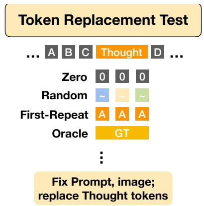

VLM diagnostics · P2 · 2026-05-25
Ablate-to-Validate：很多连续视觉 thought token 的收益可能来自长度、锚点或正则，而不一定来自 token 内容本身。
这是一个诊断工具型论文：以后看 latent visual token 方法时，应该要求内容替换消融。
编号2605.21642
优先级P2
类别VLM diagnostics
会议arXiv
方法提出 Token Replacement Test，在固定 prompt、图像、token budget 和解码设置下，把中间连续/离散视觉 thought token 替换为 zero、random、first-repeat 或 oracle，检测性能是否真正依赖 token 内容。
来源arXiv / OpenReview
先说结论。很多连续视觉 thought token 的收益可能来自长度、锚点或正则，而不一定来自 token 内容本身。 这是一个诊断工具型论文：以后看 latent visual token 方法时，应该要求内容替换消融。


核心问题
对视觉自监督/多模态预训练很重要：如果模型引入中间视觉表征或 latent token，应同时报告内容替换消融，而不能只看最终准确率。
方法拆解
提出 Token Replacement Test，在固定 prompt、图像、token budget 和解码设置下，把中间连续/离散视觉 thought token 替换为 zero、random、first-repeat 或 oracle，检测性能是否真正依赖 token 内容。
主要贡献
指出不少带 latent visual token 的 VLM 准确率提升可能来自上下文长度、特殊 token anchoring 或训练正则，而不是 token 真正携带视觉信息。
实验看点
在 LLaVA-13B、Qwen2.5-VL-3B 以及 Mirage、Mull-Tokens、CoVT 等系统上，发现替换 token 后仍保留大部分收益。
局限与读法
它主要是诊断论文，不直接提出新的预训练模型；任务集中在相对深度推理和若干视觉推理 benchmark。